|
乙坂有宇拥有着只在极少一部分的青春期少年少女身上诱发产生的罕见特殊能力，依靠这份能力度过着一帆风顺的学园生活的他，经由与神秘少女友利奈绪的邂逅，揭开了特殊能力者们身上的宿命。 |
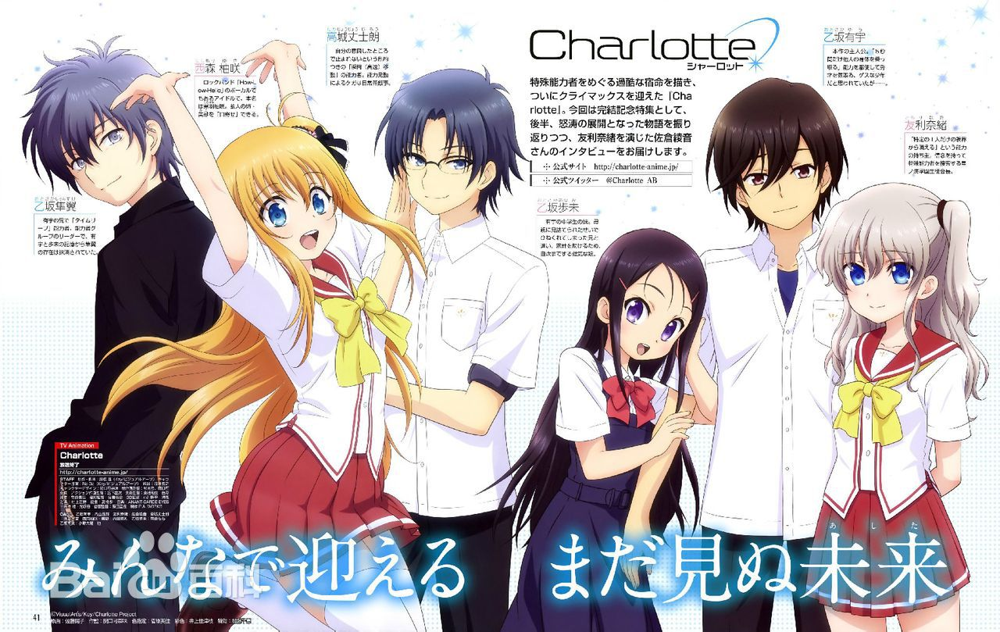
|
|
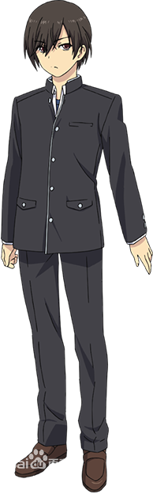 乙坂有宇 |
乙坂有宇（おとさか ゆう）
所属：星之海学园一年级（学生会所属）
特殊能力：夺取任意对象的身体（但只有5秒的时间）（真实能力为掠夺）
本作的主人公。活用“在5秒以内夺取任意对象的身体”这一能力的伪优等生。由于某个契机而进入了星之海学园。装作优等生的少年。一句话概括就是笨蛋。学习方面完全不行，是个作弊狂。自己的梦中总是出现“某个人”。
在自己回忆的世界中得知自己具备掠夺（夺取别人超能力据为己有）的能力。
|
|
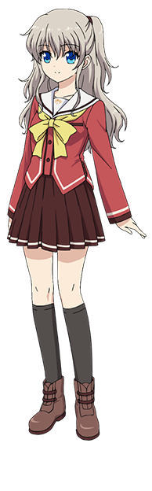 友利奈绪 |
友利奈绪（ともり なお）
所属：星之海学园一年级（学生会所属）
特殊能力：使自己的身形从他人视线中消失（但只能对任意一人起效）.星之海学园一年级的学生会长。拥有着“仅对任意一人，使自己从他的视线中消失”的能力。喜爱后摇滚乐队“ZHIEND”。品行上有问题的学生会长。要强的女生。学习成绩好，但由于品行的问题也有会做一些不会被表扬的事的时候。Charlotte故事舞台的学校里学生会的职责有些特殊，她是为了在一年内履行这份职责被学生会选拔出来的会长。在学生会活动（管理超能力者）中使用手持式摄像机。 |
|
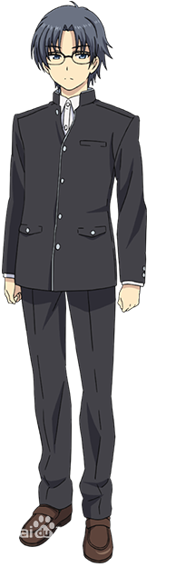 高城丈士朗 |
高城丈士朗（たかじょう じょうじろう）
所属：星之海学园一年级（学生会所属）
特殊能力：瞬间移动（高速移动）（但无法在任意位置停止）
学生会所属的一年级。由于那半吊子的瞬间移动（高速移动）能力，总是伤痕累累。是现役高中生偶像·西森柚咲的粉丝。
因为瞬间移动导致多次受伤的经历，锻炼了强健的体魄，校服下穿着防弹衣。性格与AB的高松很相似。 |
|
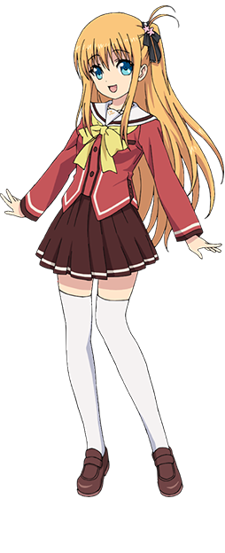 西森柚咲 |
黑羽柚咲/西森柚咲（くろばね ゆさ / にしもり ゆさ）
——开朗无邪的人气偶像
所属：星之海学园一年级（学生会所属）
特殊能力：招魂（但与自己的意志无关，且只有姐姐·美砂能够附身）
担任摇滚乐队“How-Low-Hello”主唱的人气偶像。与自己的意志无关，仅能召唤死去姐姐的灵魂。
被姐姐的亡灵附体凭依时，面容会突然改变。
本名为黑羽柚咲，由于觉得黑色的羽翼不太符合偶像的形象，所以选择西森作为艺名。 |
|
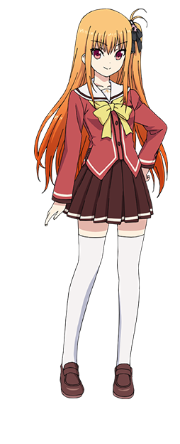 黑羽美砂 |
黑羽美砂（くろばね みさ）
——附体在妹妹身上，柚咲亡故的姐姐
与柚咲年龄相近的姐姐。借助拥有使灵魂附体能力的妹妹的身体，主张着自己的存在。本人于一年前因电动车载人事故去世。 |
|
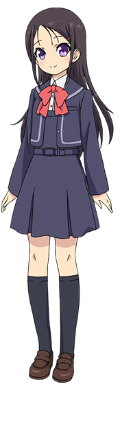 乙坂步未> |
乙坂步未（おとさか あゆみ）
——元气满满的小动物系妹妹
有宇的妹妹，初中生。和暗中使用特殊能力的有宇不同，有着如同小狗般的纯真无垢，很依恋哥哥。
是成为有宇心灵支柱的女孩子。
设定线稿中有她穿着围裙与友利奈绪关系亲密的样子。在作品中是治愈系角色。由于遭遇危机，觉醒了“崩坏”的能力。 |
|
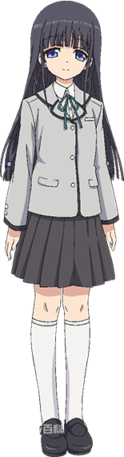 白柳弓 |
白柳弓（しらやなぎ ゆみ）
长发的美少女，阳野森高中的女神。
有着仅仅和男生说话就会面红耳赤的腼腆性格。 |
|
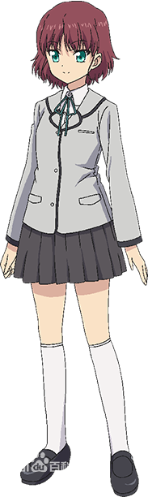 三岛 |
三岛（みしま）
弓的朋友。活泼又爱管闲事的性格与弓形成鲜明对比，偶尔也会在不成熟的弓背后推一把。
通称Mitchon。 |
|
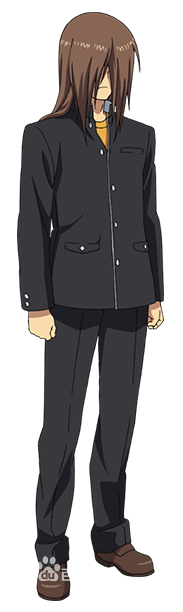 熊耳 |
熊耳（くまがみ）
将特殊能力者的所在地及其能力的情报传达给星之海学园学生会的协力者。
总是全身湿漉漉的。
在不使用能力时用头发遮住眼睛。实际可以露出眼睛。
乙坂隼翼称其为“Pooh”（小熊）。 |
|
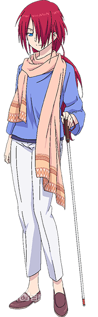 莎拉·肖恩 |
莎拉·肖恩（サラ·シェーン）
英国的世界级后摇滚乐队“ZHIEND”的主唱。
双目失明的女性。 |
|
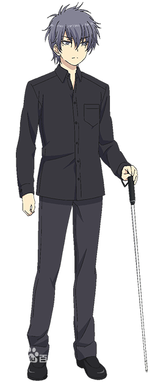 乙坂隼翼 |
乙坂隼翼
乙坂有宇的哥哥，能力是时间跳跃。隼翼为了消除自己的存在，将有宇和步未关于自己的记忆消除。 |
|
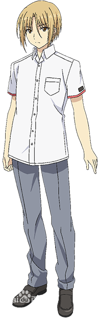 七野 |
七野
与前泊、目时被关押在超能力研究所。
能力是渗透（穿墙），在有宇回忆的世界中为了让有宇救出他的哥哥而让有宇掠夺自己的能力。被研究所警备员开枪。
后在乙坂穿越时空改变事件发生后被救活。 |
|
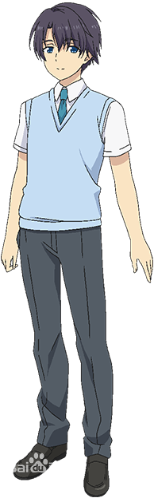 前泊 |
前泊
与目时、七野被关押在超能力研究所。
能力是消除记忆。由于某些原因消除了有宇的部分记忆。 |
|
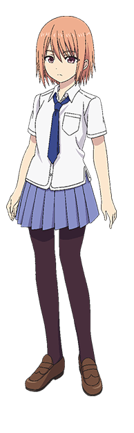 目时 |
目时
熊耳最初集结的能力者之一，也是当时唯一一名女性。
能力是催眠，在有宇回忆的世界中令收容所警备员失忆后自己也晕倒。 |